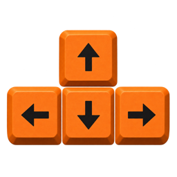
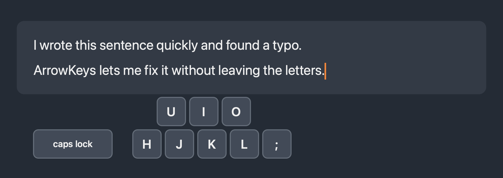
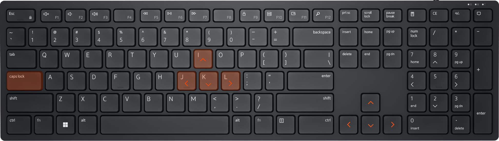
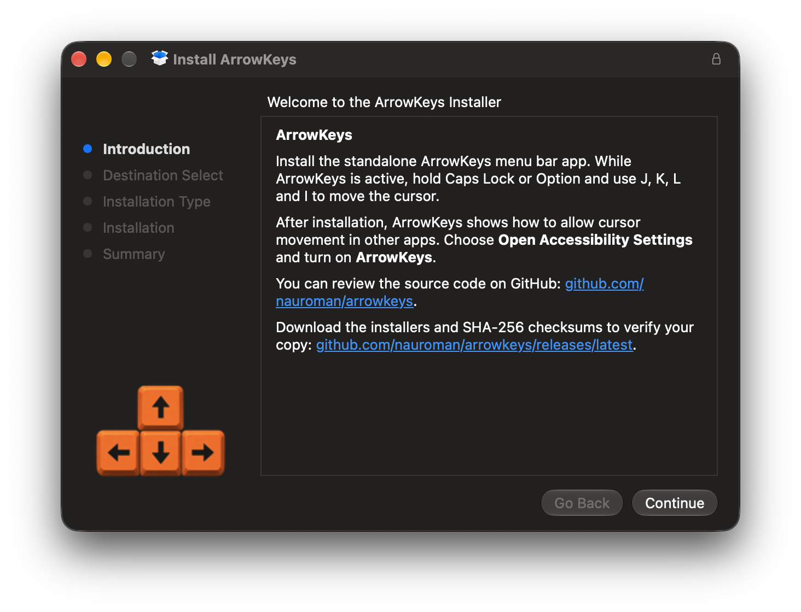
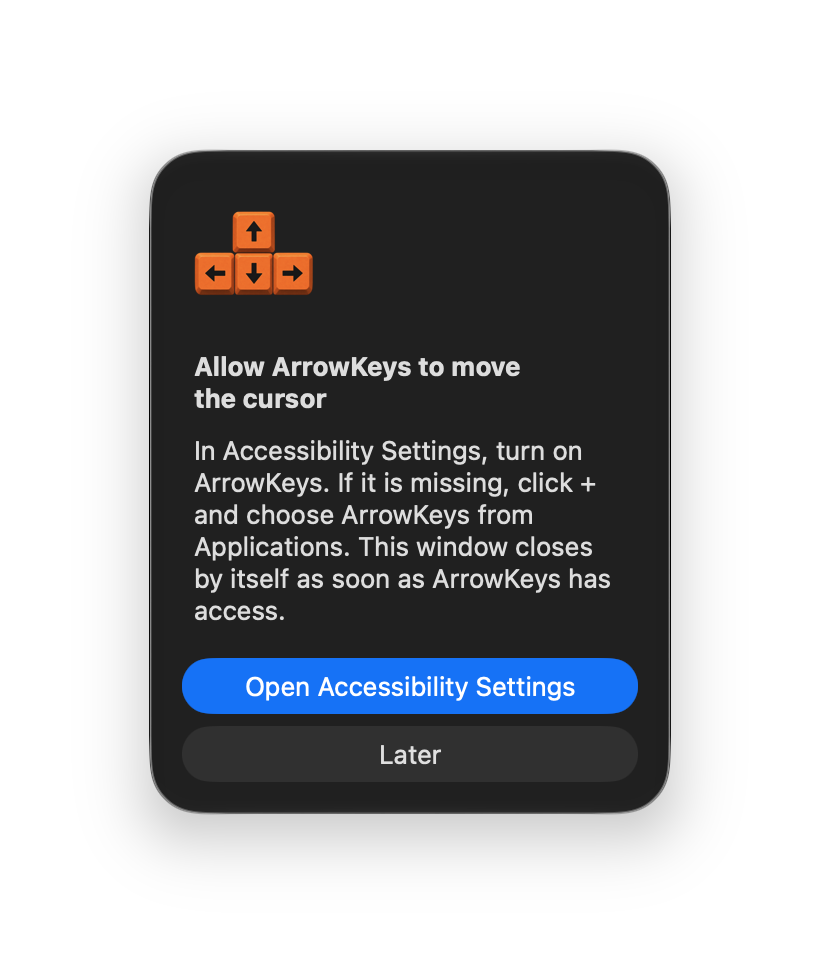
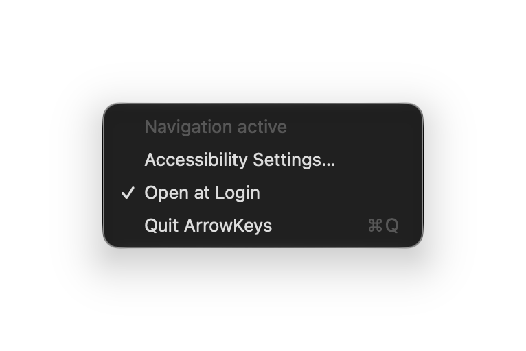

Move the cursor without leaving the letters
Hold Caps Lock and press J K L I to move like arrow keys. Free, works offline, for Mac and Windows.
Mac: macOS 13 or newer, Apple silicon and Intel, about 1 MB, signed and notarized by Apple. Windows: Microsoft Store or installer.

Why it helps
When you type, your fingers rest on the letters. The arrow keys sit in the far corner, and on many laptops they are tiny. Every typo fix means reaching over, looking down and finding your place again. ArrowKeys puts the arrows under your right hand.
Hands stay in place
Caps Lock is right under your left little finger. Hold it like Shift, move with your right hand, let go and keep typing.
Works where you type
Emails, documents, chats, notes, browsers and code editors. ArrowKeys sends ordinary arrow keys, which almost every app understands.
Private
No account, no internet, no data collection. It only reacts to its eight shortcuts and leaves all other typing alone.
The shortcuts
Hold Caps Lock and press one of these keys. Holding a key repeats it, just like a real arrow key. Use Shift for capital letters while ArrowKeys runs.
| Key | Moves the cursor | Same as |
|---|---|---|
| J | One letter left | ← |
| L | One letter right | → |
| I | One line up | ↑ |
| K | One line down | ↓ |
| H | Back one word | Option + ← on Mac, Ctrl + ← on Windows |
| ; | Forward one word | Option + → on Mac, Ctrl + → on Windows |
| U | Start of the line | Command + ← on Mac, Home on Windows |
| O | End of the line | Command + → on Mac, End on Windows |

Set up on a Mac
It takes about a minute. You do it once, and updates keep the permission.
Install
Download the installer, double-click it, choose Continue and Install, and enter your Mac password. ArrowKeys starts by itself.

Allow cursor movement
macOS asks you to approve any app that presses keys for you. Choose Open Accessibility Settings and turn on ArrowKeys. This window closes by itself once access is on.

Start moving
ArrowKeys lives in the menu bar, with no window or Dock icon. Its four-arrow menu shows Navigation active when everything is ready. Open any text, hold Caps Lock and press J.
It starts when you log in and works with every keyboard, including ones you connect later.

Set up on Windows
The easiest way is Arrow Keys in the Microsoft Store. Install it, open it once, and it starts with Windows from then on.
Microsoft Store
Installs and updates automatically. Open the app once to turn on navigation and startup at sign-in.
Installer
ArrowKeys-Windows-Setup.exe has no publisher signature, so Windows may say Windows protected your PC. Choose More info, then Run anyway.
Remove it
Uninstall ArrowKeys in Settings → Apps → Installed apps. Caps Lock goes back to normal.
Privacy and safety
ArrowKeys works offline. It does not record what you type, collect personal data, show ads or connect to the internet. The source code is public, and every release is built on GitHub from that code, tested and scanned for viruses. The Mac version is signed by the developer and notarized by Apple. Read the privacy policy
Need help?
See common questions or ask on GitHub.
Uninstall on a Mac
Choose Quit ArrowKeys in its menu, then move it from Applications to the Trash. Caps Lock goes back to how it was.
Support ArrowKeys
ArrowKeys is free and open source. If it saves you time every day, you can leave a tip on Ko-fi. It pays for the Apple developer membership that lets the Mac version open without warnings, and for time to keep ArrowKeys updated.